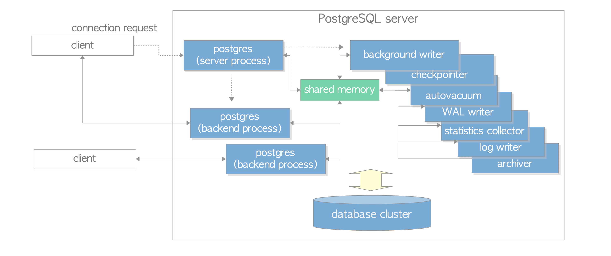
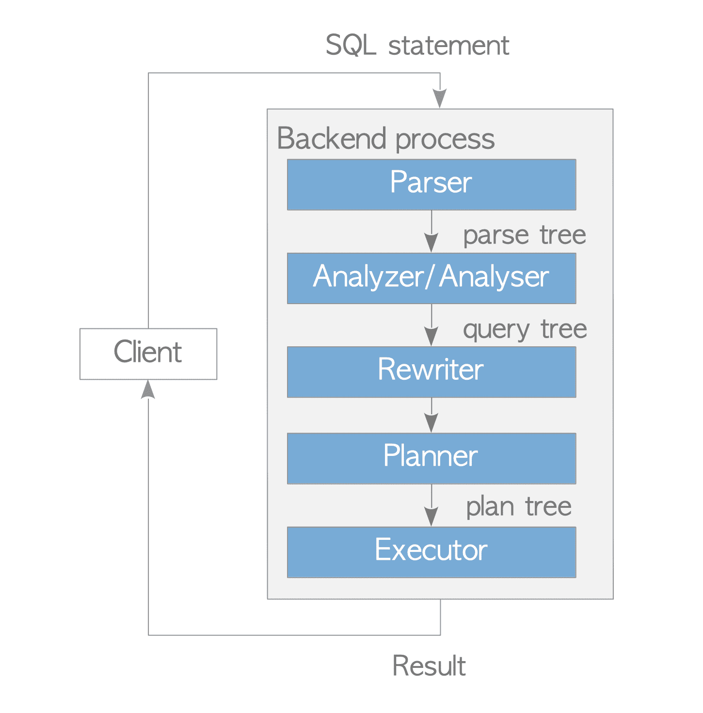
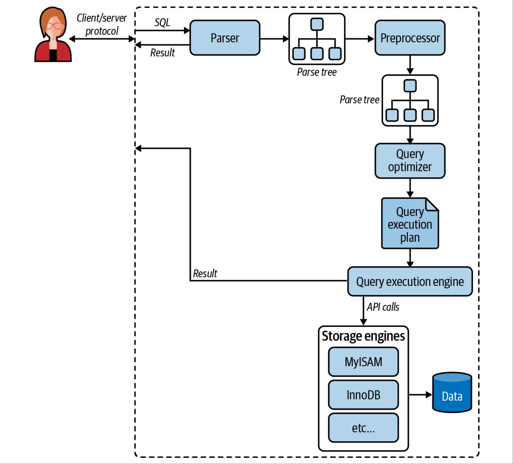
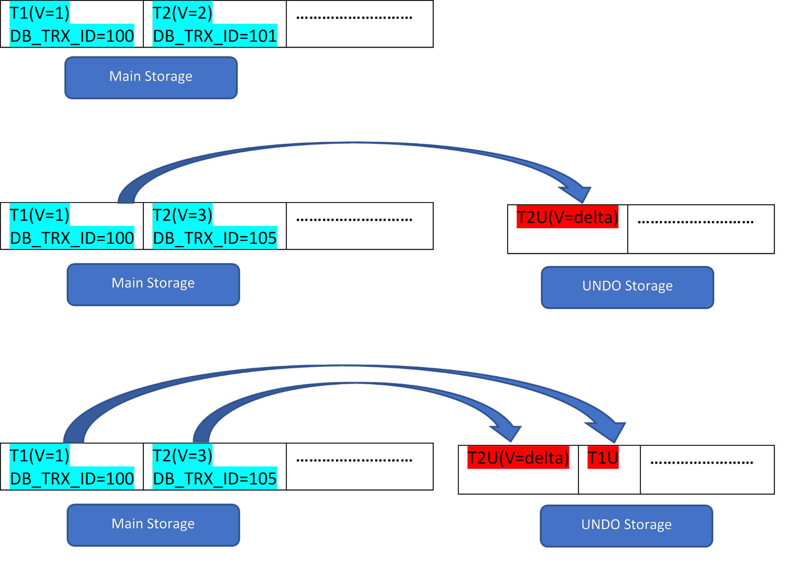
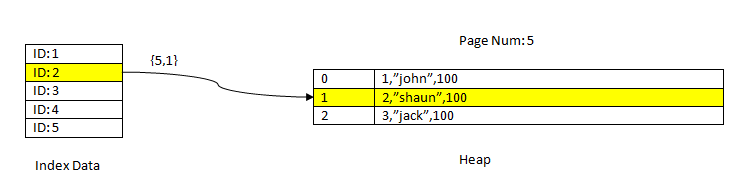
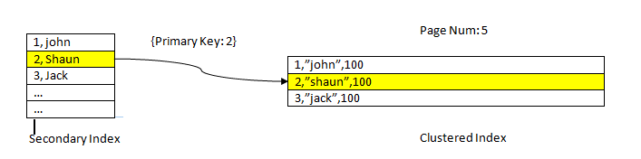

MySQL и PostgreSQL
что «под капотом» и почему это важно знать прикладному разработчику
Никита Стрелков, разработчик e-commerce подразделения, VK
Никита Стрелков
Go/PHP разработчик, 8+ лет в программировании, backend разработчик подчеркнуть
Попеременно работал в проектах то с PG, то с Mysql
В VK (бывший MRG) пришел в проект, в котором рядом мирно сосуществовали Mysql-oltp и PG-olap. Последние
3 года в проде только PG.
Также я являюсь ведущим преподавателем семестрового курса СУБД в Технопарке МГТУ им. Баумана проекта VK
Education
Сравнение функциональности
Процессная/потоковая модель сервера
Путь выполнения запроса
MVCC
Индексы
Надо понимать, что СУБД - это очень комплексные и сложные системы, с большим количеством компонентов и
уровней абстракций.
Почему, а главное зачем?
Так как Mysql и PG одни из самых популярных реляционных субд, многим разработчикам в
течение карьеры приходится
либо вставать перед выбором субд для нового проекта или его части,
либо переходить с одной субд на другую,
либо даже работать с обеими одновременно
Поэтому Я СЧИТАЮ, что хорошо бы знать про отличительные особенности этих СУБД
И тут еще небольшая оговорка, из-за того, что я в последние несколько лет и в проде использую постгрес и
курс для студентов у нас построен тоже вокруг него,
Функция
PostgreSQL 14+
MySQL 8+
CTE
Есть
Есть
Декларативное секционирование
Есть
Есть
Полнотекстовый поиск
Есть
Есть
GIS и SRS
Есть
Есть
JSON
Есть
Есть
Логическая репликация
Есть
Есть
Полусинхронная репликация
Есть
Есть
Оконные функции
Есть
Есть
Tранзакционный DDL
Есть
Есть
Если погуглить про разницу, то большинство статей и роликов на youtube будут
ограничиваться сравнением набора фич.
И если ставить вопрос именно о выборе субд для своего проекта, то этого критерия было достаточно для
маленьких и средних проектов.
Но то было раньше.
На протяжении многих все сравнение и муки выбора можно было сводить просто к выбору нужной фичи, но
внезапно за последние несколько лет основная функциональность этих СУБД примерно сравнялась.
ДА, надо понимать, что работают эти фичи тоже с разной эффективностью и со своими особенностями.
Но ключевой момент в том, что сравнивать субд и делать выбор просто по наличию нужной фичи сегодня
некорректно, и нужно смотреть глубже

Под "PostgreSQL server" обычно подразумевается набор процессов:
Процесс "postgres server" (ранее postmaster), являющийся родительским для всех остальных
процессов
Процессы postgres backend", которые создаются под каждое соединение
Набор служебных процессов, отвечающих за разные компоненты и функции сервера
А взаимодействуют они все через общую память
$ pstree -p 43545
-+= 00001 root /sbin/launchd
\-+= 43545 n.strelkov /usr/local/bin/postgres -D /usr/local/var/postgres
|--= 43547 n.strelkov postgres: checkpointer
|--= 43548 n.strelkov postgres: background writer
|--= 43549 n.strelkov postgres: walwriter
|--= 43550 n.strelkov postgres: autovacuum launcher
|--= 43551 n.strelkov postgres: stats collector
|--= 43552 n.strelkov postgres: logical replication launcher
|--= 48886 n.strelkov postgres: n.strelkov postgres [local] idle
\--= 49086 n.strelkov postgres: n.strelkov movielens [local] idle in transaction
Вот я для примера на своем ноуте запустил postgres server,
$ pstree -p 50249
-+= 00001 root /sbin/launchd
\-+= 50136 n.strelkov /bin/sh /usr/local/opt/mysql/bin/mysqld_safe \
--datadir=/usr/local/var/mysql
\--- 50249 n.strelkov /usr/local/opt/mysql/bin/mysqld \
--basedir=/usr/local/opt/mysql \
--datadir=/usr/local/var/mysql \
--plugin-dir=/usr/local/opt/mysql/lib/plugin \
--log-error=n-strelkov.err \
--pid-file=n-strelkov.pid
Те же подготовительные операции я проделал с mysql сервером
mysql> show processlist\G
*************************** 1. row ***************************
Id: 5
User: event_scheduler
Host: localhost
db: NULL
Command: Daemon
Time: 539
State: Waiting on empty queue
Info: NULL
*************************** 2. row ***************************
Id: 8
User: root
Host: localhost
db: NULL
Command: Query
Time: 0
State: init
Info: show processlist
*************************** 3. row ***************************
Id: 9
User: root
Host: localhost
db: NULL
Command: Sleep
Time: 437
State:
Info: NULL
3 rows in set (0.00 sec)
Connection ID
mysql> select connection_id()\G
*************************** 1. row ***************************
connection_id(): 8
1 row in set (0.01 sec)
количество активных потоков
mysql> show global status like 'threads_running'\G
*************************** 1. row ***************************
Variable_name: Threads_running
Value: 2
1 row in set (0.00 sec)
PostgreSQL
MySQL
PGPool-II PgBouncer Client-side
Не забывать настраивать пулл соединений с СУБД

Прикладная программа устанавливает подключение к серверу PostgreSQL. Эта программа передаёт
запрос на сервер и ждёт от него результатов.
На этапе разбора запроса сервер выполняет синтаксическую проверку запроса, переданного
прикладной программой, и создаёт дерево запроса.
Система правил принимает дерево запроса, созданное на стадии разбора, и ищет в системных
каталогах правила для применения к этому дереву.
Обнаружив подходящие правила, она выполняет преобразования, заданные в теле правил.
Одно из применений системы правил заключается в реализации представлений. Когда выполняется
запрос к представлению (т. е. виртуальной таблице),
система правил преобразует запрос пользователя в запрос, обращающийся не к представлению, а к
базовым таблицам из определения представления.
Планировщик/оптимизатор принимает дерево запроса (возможно, переписанное) и создаёт план
запроса, который будет передан исполнителю.
Он выбирает план, сначала рассматривая все возможные варианты получения одного и того же
результата.
Например, если для обрабатываемого отношения создан индекс, прочитать отношение можно двумя
способами.
Во-первых, можно выполнить простое последовательное сканирование,
а во-вторых, можно использовать индекс.
Затем оценивается стоимость каждого варианта и выбирается самый дешёвый.
Затем выбранный вариант разворачивается в полноценный план, который сможет использовать
исполнитель.
Исполнитель рекурсивно проходит по дереву плана и получает строки тем способом, который указан в
плане.
Он сканирует отношения, обращаясь к системе хранения, выполняет сортировку и соединения,
вычисляет условия фильтра и, наконец, возвращает полученные строки.

Схема немного другая, но если присмотреться, то суть примерно та же. Отдельные компоненты, отвечают за:
парсинг или синтаксический разбор
семантический разбор и подготовку запроса
планирование и оптимизацию
выполнение запроса
Но обратите внимание на один важный нюанс:
MySQL
PostgreSQL
Размер кластерного индекса
Размер таблицы
количество строк
количество строк
количество страниц в памяти
MySQL
PostgreSQL
Распределение данных, в т.ч. доля null значений
Доля null значение
Средний размер колонки в байтах
Количество уникальных значений
Статистическая корреляция между физическим порядком строк и логическим порядком значений
столбца
Распределение данных
Наиболее часто встречаемые значения и их частота
MySQL
PostgreSQL
Функциональные зависимости
Количество уникальных значений
И вот именно благодаря тому, что postgres может собирать больше статистики, он в среднем лучше подходит
для сложных аналитических запросов
A tomicity - Атомарность
C onsistency - Согласованность
I solation - Изолированность
D urability - Долговечность
Атомарность
Атомарность гарантирует, что никакая транзакция не будет зафиксирована в системе частично
Согласованность
каждая успешная транзакция по определению фиксирует только допустимые результаты
Изолированность
Во время выполнения транзакции параллельные транзакции не должны оказывать влияние на её
результат
Долговечность
изменения, сделанные успешно завершённой транзакцией, должны остаться сохранёнными после
возвращения системы в работу
Multi Version Concurrency Control
MVCC это подход к организации конкурентной обработки данных, основанный на идее одновременного хранения
нескольких версий объекта, так чтобы операции чтения и записи не конфликтовали
action
TXID: 103
xmin
xmax
id
name
notes
100
0
1
Alice
Great at programming
101
0
2
Bob
Always talk to alice
102
0
3
Eve
Listens to everyone's conversations
action
TXID: 103
xmin
xmax
id
name
notes
100
0
1
Alice
Great at programming
- update
101
0
2
Bob
Always talk to alice
102
0
3
Eve
Listens to everyone's conversations
action
TXID: 103
xmin
xmax
id
name
notes
100
0
1
Alice
Great at programming
- update
101
103
2
Bob
Always talk to alice
102
0
3
Eve
Listens to everyone's conversations
action
TXID: 103
xmin
xmax
id
name
notes
100
0
1
Alice
Great at programming
- update
101
103
2
Bob
Always talk to alice
102
0
3
Eve
Listens to everyone's conversations
+ update
103
0
2
Bob
Working very hard
action
TXID: 104
xmin
xmax
id
name
notes
100
0
1
Alice
Great at programming
101
103
2
Bob
Always talk to alice
102
0
3
Eve
Listens to everyone's conversations
103
0
2
Bob
Working very hard
action
TXID: 104
xmin
xmax
id
name
notes
100
0
1
Alice
Great at programming
101
103
2
Bob
Always talk to alice
102
0
3
Eve
Listens to everyone's conversations
103
0
2
Bob
Working very hard
+ insert
104
0
4
Dave
Very promising new-hire
action
TXID: 105
xmin
xmax
id
name
notes
100
0
1
Alice
Great at programming
101
103
2
Bob
Always talk to alice
102
0
3
Eve
Listens to everyone's conversations
103
0
2
Bob
Working very hard
104
0
4
Dave
Very promising new-hire
action
TXID: 105
xmin
xmax
id
name
notes
100
0
1
Alice
Great at programming
101
103
2
Bob
Always talk to alice
- delete
102
105
3
Eve
Listens to everyone's conversations
103
0
2
Bob
Working very hard
104
0
4
Dave
Very promising new-hire
action
TXID: 106
xmin
xmax
id
name
notes
100
0
1
Alice
Great at programming
101
103
2
Bob
Always talk to alice
102
105
3
Eve
Listens to everyone's conversations
103
0
2
Bob
Working very hard
104
0
4
Dave
Very promising new-hire

In order to support multiple versions, InnoDB maintains additional fields for each row as mentioned
below:
DB_TRX_ID: Transaction ID of the transaction which inserted or updated the row.
DB_ROLL_PTR: It is also called the roll pointer and it points to undo log record written to the rollback
segment (more on this next).
Like PostgreSQL, InnoDB also creates multiple versions of the row as part of all operation but the
storage of the older version is different.
In case of InnoDB, the old version of the changed row is kept in a separate tablespace/storage (called
undo segment). So unlike PostgreSQL, InnoDB keeps only the latest version of rows in the main storage
area and the older version is kept in the undo segment. Row versions from the undo segment are used
to undo operation in case of rollback and for reading an older version of rows by READ statement
depending on the isolation level.
Consider there are two rows, T1 (with value 1) and T2 (with value 2) for a table, the creation of new
rows can be demonstrated in below 3 steps:
As seen from the figure, initially there are two rows in the database with values 1 and 2.
Then in as per second stage, the row T2 with value 2 gets updated with the value 3. At this point, a new
version is created with the new value and it replaces the older version. Before that, the older version
gets stored in the undo segment (notice the UNDO segment version has only a delta value). Also, note
that there is one pointer from the new version to the older version in the rollback segment. So unlike
PostgreSQL, InnoDB update is “IN-PLACE”.
Similarly, in the third step, when row T1 with value 1 gets deleted, then the existing row gets
virtually deleted (i.e. it just marks a special bit in the row) in the main storage area and a new
version corresponding to this gets added in the Undo segment. Again, there is one roll pointer from the
main storage to the undo segment.
All operations behave in the same way as in the case of PostgreSQL when seen from outside. Just internal
storage of multiple version differs.
Размер старой версии объекта
INSERT
Восстановление предыдущей версии в случае отката транзакции
Освобождение места занятого старой версией
Влияние задержек очистки мертвых кортежей
Последовательное сканирование "распухшей таблицы"
Индексы
Size of an older version
PostgreSQL just updates xmax on the older version of the tuple, so the size of the older version
remains the same to the corresponding inserted record. This means if you have 3 versions of an
older tuple then all of them will have the same size (except the difference in actual data size
if any at each update).
Whereas in case of InnoDB, the object version stored in the Undo segment is typically smaller
than the corresponding inserted record. This is because only the changed values (i.e.
differential) are written to UNDO log.
INSERT operation
InnoDB needs to write one additional record in the UNDO segment even for INSERT whereas
PostgreSQL creates new version only in case of UPDATE.
Restoring an older version in case of rollback
PostgreSQL does not need to anything specific in order to restore an older version in case of
rollback. Remember the older version has xmax equal to the transaction which updated this tuple.
So, till this transaction id gets committed, it is considered to be alive tuple for a concurrent
snapshot. Once the transaction is rollbacked, the corresponding transaction will be
automatically considered alive for all transaction as it will be an aborted transaction.
Whereas in case of InnoDB, it is explicitly required to rebuild the older version of the object
once rollback happens.
Reclaiming space occupied by an older version
In case of PostgreSQL, the space occupied by an older version can be considered dead only when
there is no parallel snapshot to read this version. Once the older version is dead, then the
VACUUM operation can reclaim the space occupied by them. VACUUM can be triggered manually or as
a background task depending on the configuration.
InnoDB UNDO logs are primarily divided into INSERT UNDO and UPDATE UNDO. The first one gets
discarded as soon as the corresponding transaction commits. The second one needs to preserve
till it is parallel to any other snapshot. InnoDB does not have explicit VACUUM operation but on
a similar line it has asynchronous PURGE to discard UNDO logs which runs as a background task.
Impact of delayed vacuum
As discussed in a previous point, there is a huge impact of delayed vacuum in case of
PostgreSQL. It causes the table to start bloating and causing storage space to increase even
though records are constantly deleted. It may also reach a point where VACUUM FULL needs to be
done which is very costly operations.
Sequential scan in case of bloated table
PostgreSQL sequential scan must traverse through all older version of an object even though all
of them
are dead (till they are removed using vacuum). This is the typical and most talked about problem
in
PostgreSQL. Remember PostgreSQL stores all versions of a tuple in the same storage.
Whereas in case of InnoDB, it does not need to read Undo record unless it is required. In case
all undo
records are dead, then it will be only enough to read through all the latest version of the
objects.
Index
PostgreSQL stores index in a separate storage which keeps one link to actual data in HEAP. So
PostgreSQL
has to update INDEX part also even though there was no change in INDEX. Though later this issue
was
fixed by implementing HOT (Heap Only Tuple) update but still it has the limitation that if a new
heap
tuple can’t be accommodated in the same page, then it fallback to normal UPDATE.
InnoDB does not have this problem as they use clustered index.
Conclusion
PostgreSQL MVCC has got few drawbacks especially in terms of bloated storage if your workload has
frequent UPDATE/DELETE. So if you decide to use PostgreSQL you should be very careful to configure
VACUUM wisely.
PostgreSQL community has also acknowledged this as a major issue and they have already started
working
on UNDO based MVCC approach (tentative name as ZHEAP) and we might see the same in a future release.
Индексы
Database Index, as the name suggests, maintains an index to the actual data and thereby improves
performance to retrieve data from the actual table. In a more database terminology, the index allows
fetching page containing indexed data in a very minimal traversal as data is sorted in specific order.
Index benefit comes at the cost of additional storage space in order to write additional data. Indexes
are specific to the underlying table and consist of one or more keys (i.e. one or more columns of the
specified table). There are primarily two types of index architecture
Два основных типа архитектуры индекса:
Кластерный индекс
Некластерный индекс
Проиндексированное значение хранится вместе с данными.
Данные хранятся в отсортированном виде в порядке заданном индексом.
У таблицы может быть только один индекс такого типа.
Проиндексированные значения и данные хранятся отдельно.
Индекс содержит указатели на остальные данные строки.
Так же известен, как "вторичный индекс" (secondary index).
Все индексы являются некластерными(вторичными), так как данные хранятся отдельно в табличной куче (Table
Heap)

Есть механизм кластеризации данных по индексу
PostgreSQL supports only non-clustered index. That means index data and complete data
(here onward referred to as heap data) are stored in a separate storage. Non-clustered indexes are like
“Table of Content” in any document, wherein first we check the page number and then check those page
numbers to read the whole content. In order to get the complete data based on an index, it maintains a
pointer to corresponding heap data. It's the same as after knowing page number, it needs to go to that
page and get the actual content of the page.
For example, consider a table with three columns and an index on column ID. In order to READ the data
based on the key ID=2, first, the Indexed data with the ID value 2 is searched. This contains a pointer
(called as Item Pointer) in terms of the page number (i.e. block number) and offset of data within that
page. In the current example, the index points to page number 5 and the second line item in the page
which in turn keeps offset to the whole data(2,”Shaun”,100). Notice whole data also contains the indexed
data which means the same data is repeated in two storages.
How does INDEX help to improve performance? Well, in order to select any INDEX record, it does not scan
all pages sequentially, rather it just needs to partially scan some of the pages using the underlying
Index data structure. But there is a twist, since each record found from Index data, it needs to look in
Heap data for whole data, which causes a lot of random I/O and it’s considered to perform slower than
Sequential I/O. So only if a small percentage of records are getting selected (which decided based on
the PostgreSQL optimizer Cost), then only PostgreSQL chooses Index Scan otherwise even though there is
an index on the table, it continues to use Sequence Scan.
In summary, though Index creation speeds up the performance ,it should be carefully chosen as it has
overhead in terms of storage, degraded INSERT performance.
Now we may wonder, in-case we need only the index part of data, can we fetch only from the index storage
page? Well, the answer to this is directly related to how MVCC works on the index storage as explained
next.
Like Heap pages, index page maintains multiple versions of index tuple but it does not
maintain visibility information. As explained in my previous MVCC blog, in order to decide suitable
visible version of tuples, it requires comparing transaction. The transaction which
inserted/updated/deleted tuple are maintained along with heap tuple but the same is not maintained with
index tuple. This is purely done to save storage and it’s a trade-off between space and performance.
Now coming back to the original question, since the visibility information in Index tuple is not there,
it needs to consult the corresponding heap tuple to see if the data selected is visible. So even though
other parts of the data from heap tuple is not required, still need to access the heap pages to check
visibility. But again, there is a twist in-case all tuples on a given page (page pointed by index i.e.
ItemPointer) are visible then does not need to refer each item of Heap page for “visibility check” and
hence the data can be returned only from the Index page. This special case is called “Index Only Scan”.
In order to support this, PostgreSQL maintains a visibility map for each page to check the page level
visibility.
Есть поддержка составных, частичных и функциональных индексов.
CREATE INDEX idx_users_age_gender
ON people(age, gender); -- составной
CREATE INDEX idx_users_age_partial
ON people(age) where age >= 25; -- частичный
CREATE INDEX idx_users_names
ON people(LOWER(name)); -- функциональный
Большой выбор встроенных типов индексов:
B-Tree Index
Hash Index
GIN (Generalized Inverted Index)
GiST (Generalized Search Tree)
SP-GiST (Space Partitioned GiST)
(BRIN) Block Range Index
В таблице может быть 1 кластерный и несколько некластерных вторичных индексов.

Clustered Index is a special kind of index in InnoDB. Here the indexed data is not
stored separately rather it is part of the whole row data. In other words, the clustered index just
forces the table data to be sorted physically using the key column of the index. It can be considered as
“Dictionary”, where data is sorted based on the alphabet.
Since the clustered index sort rows using an index key, there can be only one clustered index. Also,
there must be one clustered index as InnoDB uses same to optimally manipulate data during various data
operations.
Clustered index are created automatically (as part of table create) using one of the table columns as
per below priority:
Using the primary key if the primary key is mentioned as part of the table creation.
Chooses any unique column where all the key columns are NOT NULL.
Otherwise internally generates a hidden clustered index on a system column which contains the row ID of
each row.
Unlike PostgreSQL non-clustered index, InnoDB access a row using clustered index faster because the
index search leads directly to the page with all row data and hence avoiding random I/O.
Also getting the table data in sorted order using the clustered index is very fast as all data are
already sorted and also whole data is available.
Поддерживает в явном виде только B+ Tree тип индекса.
Hash индексы используются самим движком InnoDB в служебных целях.
Поддерживает Index Hints
SELECT * FROM table1 USE INDEX (col1_index,col2_index)
WHERE col1=1 AND col2=2 AND col3=3;
SELECT * FROM table1 IGNORE INDEX (col3_index)
WHERE col1=1 AND col2=2 AND col3=3;
Спасибо за внимание!
Вопросы, пожелания, предложения, замечания и критику прошу направлять сюда: